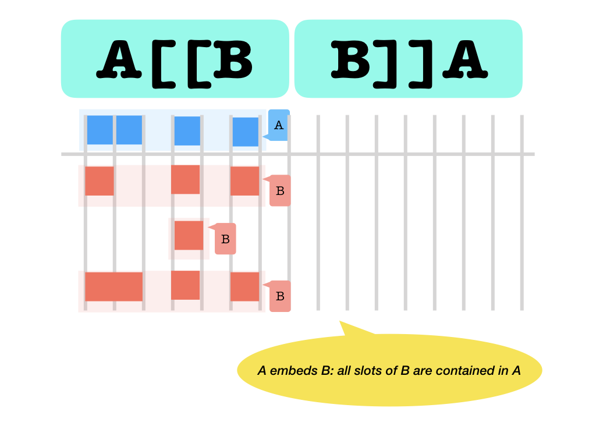
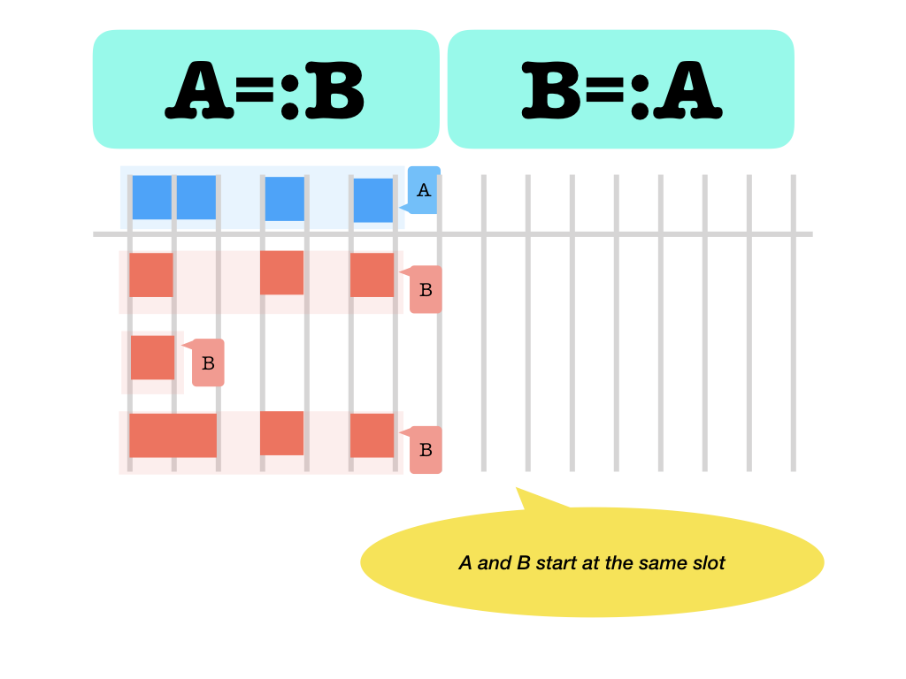
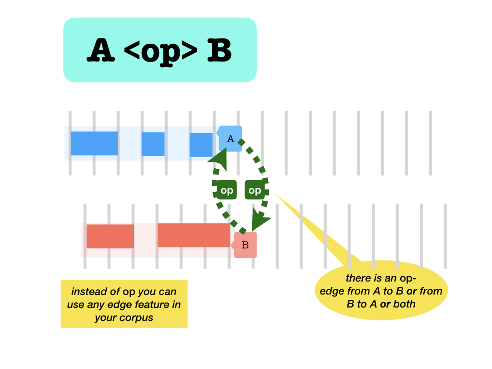
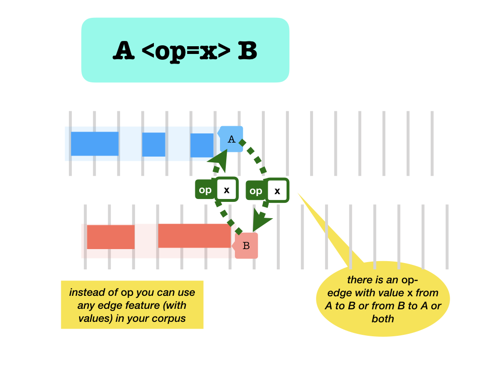

Module tf.about.searchusage
Usage
What is Text-Fabric Search?
You can query for graph like structures in your data set. The structure you are interested in has to be written as a search template.
A search template expresses a pattern of nodes and edges with additional conditions also known as quantifiers.
You can query a TF corpus in the TF browser.
You can also run queries on arbitrary TF corpora programmatically, e.g. in a Jupyter
notebook, by using the S Api, documented here.
Search primer
A search template consists of a bunch of lines, possibly indented, that specify objects to look for. Here is a simple example:
book name=Genesis|Exodus
chapter number=2
sentence
word pos=verb gender=feminine number=plural
word pos=noun gender=feminine number=singular
This template looks for word combinations within a sentence within chapter 2 of either Genesis or Exodus, where one of the words is a verb and the other is a noun. Both have a feminine inflection, but the verb is plural and the noun is singular.
The indentation signifies embedding, i.e. containment. The two words are contained in the same sentence, the sentence is contained in the chapter, the chapter in the book.
The conditions you specify on book, chapter, word are all conditions in terms of node features. You can use all features in the corpus for this.
The order of the two words is immaterial. If there are cases where the verb follows the noun, they will be included in the results.
Also, the words do not have to be adjacent. If there are cases with words intervening between the noun and the verb, they will be included in the results.
Speaking of results: the search function returns its results as tuples of
nodes:
(book, chapter, sentence, word1, word2)
With these nodes in hand, you can programmatically gather all information about the results that the corpus provides.
If the order between the verb and the noun is important, you can specify that as an additional constraint. You can give the words a name, and state a relational condition. Here we state that the noun precedes the verb.
book name=Genesis|Exodus
chapter number=2
sentence
vb:word pos=verb gender=feminine number=plural
nn:word pos=noun gender=feminine number=singular
nn < vb
This can be written a bit more economically as:
book name=Genesis|Exodus
chapter number=2
sentence
word pos=verb gender=feminine number=plural
> word pos=noun gender=feminine number=singular
If you insist that the noun immediately precedes the verb, you can use a different relational operator:
book name=Genesis|Exodus
chapter number=2
sentence
word pos=verb gender=feminine number=plural
:> word pos=noun gender=feminine number=singular
There are more kinds of relational operators.
If the noun must be the first word in the sentence, you can specify it as
book name=Genesis|Exodus
chapter number=2
s:sentence
w:word pos=noun gender=feminine number=singular
<: word pos=verb gender=feminine number=plural
s =: w
or a bit more economically:
book name=Genesis|Exodus
chapter number=2
sentence
=: word pos=noun gender=feminine number=singular
<: word pos=verb gender=feminine number=plural
If the verb must be the last word in the sentence, you can specify it as
book name=Genesis|Exodus
chapter number=2
s:sentence
word pos=noun gender=feminine number=singular
<: w:word pos=verb gender=feminine number=plural
s := w
or a bit more economically:
book name=Genesis|Exodus
chapter number=2
s:sentence
word pos=noun gender=feminine number=singular
<: word pos=verb gender=feminine number=plural
:=
You can also use the edge features in the corpus as relational operators as well.
Suppose we have an edge feature sub between clauses, such that if main clause
m has subordinate clauses s1, s2 and s3, then
E.sub.f(m) = (s1, s2, s3)
You can use this relation in search. Suppose we want to find the noun verb pair in subordinate clauses only. We can use this template:
book name=Genesis|Exodus
chapter number=2
m:clause
s:clause
word pos=verb gender=feminine number=plural
:> word pos=noun gender=feminine number=singular
m -sub> s
or a bit more economically:
book name=Genesis|Exodus
chapter number=2
clause
-sub> clause
word pos=verb gender=feminine number=plural
:> word pos=noun gender=feminine number=singular
Read m -sub> s as: there is a sub-arrow from m to s.
Edge features may have values. For example, the crossref feature is a set of edges between parallel verses, with the levels of confidence as values. This number is an integer between 0 and 100. We can ask for parallel verses in an unqualified way:
verse
<crossref> verse
But we can also ask for the cases with a specific confidence:
verse
<crossref=90> verse
or cases with a high confidence:
verse
<crossref>95> verse
or cases with a low confidence:
verse
<crossref<80> verse
All feature conditions that you can assert on node features, you can also
assert for edge features. If an edge feature is integer valued, such as crossref
you can use comparisons; if it is string valued, you can use regular expressions.
In both cases you can also use the other constructs, such as
verse
<crossref=66|77> verse
To get a more specific introduction to search, consult the search tutorials for
annotated corpora, see tf.about.corpora.
Finally an example with quantifiers. We want all clauses where Pred-phrases consist of verbs only:
clause
/where/
phrase function=Pred
/have/
/without/
word sp#verb
/-/
/-/
Search template reference
Template lines
We have these kinds of lines in a template:
comment lines
- if the first non-white character on a line is
%it is a comment line; - you cannot comment out parts of lines after a non-white part;
- if a line is empty or has whitespace only, it is a comment line;
- comment lines are allowed everywhere;
- comment lines are ignored.
atom lines
(simple): indent name:otype-or-set features
Examples
word pos=verb gender=femininevb:word pos=verb gender=femininevb pos=verb gender=feminine
Notes
- The indent is significant. Indent is counted as the number of white space characters, where tabs count for just 1. Avoid tabs!.
- The name: part is optional. If present, it defines a name for this atom that can be used in relational comparisons and other atoms.
- The otype-or-set part is optional. If it is absent, the name part must be present.
The meaning of
p:phrase sp=verb
p vs=qal
is identical to the meaning of
p:phrase sp=verb
pnew:phrase vs=qal
p = pnew
(with relop): indent op name:otype-or-set features
<: word pos=verb gender=feminine- The relation operator specifies an extra constraint between a preceding atom and this atom.
- The preceding atom may be the parent, provided we are at its first child, or it may the preceding sibling.
- You can leave out the name:otype-or-set features bit. In that case, the relation holds between the preceding atom and its parent.
- The name: part is optional. Exactly as in the case without relop.
- The otype-or-set part is optional. Exactly as in the case without relop.
The otype-or-set is either a node type that exists in your TF data set,
or it is the name of a set that you have passed in the sets parameter alongside
the query itself when you call search or study.
See feature specifications below for all full variety of feature constraints on nodes and edges.
feature lines: features
Indent is not significant. Continuation of feature constraints after a preceding atom line or other feature line. This way you can divide lengthy feature constraints over multiple lines.
See feature specifications below for the full variety of feature constraints on nodes and edges.
relation lines: name operator name
s := wm -sub> sm <sub- sm <sub> s- Indents and spacing are ignored.
- There must be white-space around the operator.
- Operators that come from edge features may be enriched with values.
See relational operators below for the whole spectrum of relational constraints on nodes.
quantifier sub-templates:
Atom lines that contain an otype or set may be followed by quantifiers. Quantifiers consist of search templates themselves, demarcated by some special keywords:
/without//where/and/have//with/and/or//-/
N.B. Quantifiers are also allowed after the feature lines that may follow such atoms. In that case, the quantifier is also associated with the atom. So the following two are equivalent
word gn=f
/without/
.. nu=pl
/-/
and
word
gn=f
/without/
.. nu=pl
/-/
See quantifiers below for all the syntax and semantics.
Feature specifications
The features above is a specification of what features with which values to search for. This specification must be written as a white-space separated list of feature specs.
A feature spec has the form name valueSpec, with no space between the name and the valueSpec.
Value specifications
The valueSpec may have the following forms and meanings:
| form | the feature name … |
|---|---|
(empty) |
has any value except None |
# |
has value None |
* |
has arbitrary value |
=values |
has one of the values specified |
#values |
has none of the values specified |
>value |
is greater than value |
<value |
is less than value |
~regular expression |
has a value and it matches regular expression |
Why * ?
The operator * after a feature name does not pose any restriction at all.
It will not influence the search results.
Why would you want to include such a "criterion"?
Some applications, such as the Text-Fabric browser collect the features used in a query
to retrieve result information to be presented to the user. So if you want to include
the values of a particular feature, mention that feature with a *.
All these forms are also valid as
-name form> and <name form- and <name form>,
in which case
they specify value constraints on edge features.
This is only meaningful if the edge feature is declared to have values (most edge features
do not have values).
Additional constraints
- There may be no space around the
=#<>~. - name must be a feature name that exists in the dataset. If it references a feature that is not yet loaded, the feature will be loaded automatically.
- values must be a
|separated list of feature values, no quotes. No spaces around the|. If you need a space or|or\in a value, escape it by a\. Escape tabs and newlines as\tand\n. - When comparing values with
<and>:- value must be an integer (negative values allowed);
- You can do numeric comparisons only on number-valued features, not on string-valued features.
- If the feature in question is not defined for a node, or has the value
Nonethe outcome is alwaysFalse.
- regular expression must be a string that conforms to the Python
regular expression syntax.
- If you need a space in your regular expression, you have to escape it with a
\. - You can do regular expressions only on string-valued features, not on number-valued features.
- If you need a space in your regular expression, you have to escape it with a
Relational operators
Node comparison
=: is equal (meaning the same node, a clause and a verse that occupy the same slots are still unequal)
#: is unequal (meaning a different node, a clause and a verse that occupy the same slots are still unequal)
<>: before and after (in the canonical ordering, seetf.core.nodes)
Slot comparison
==: occupy the same slots (identical slot sets)
&&: overlap (the intersection of both slot sets is not empty)
##: occupy different slots (but they may overlap, the set of slots of the two are different as sets)
||: occupy disjoint slots (no slot occupied by the one is also occupied by the other)
[[ ]]: embeds and contains (slot set inclusion, in both directions)  Never holds between the same nodes. But it holds between different nodes with the same slots. But a slot can never embed an other node.<<>>: before and after (with respect to the slots occupied: left ends before right starts and vice versa)
<::>: adjacent before and after (with respect to the slots occupied: left ends immediately before right starts and vice versa)
=:left and right start at the same slot :=left and right end at the same slot
::left and right start and end at the same slot
Nearness comparison
Some of the adjacency relations can actually be weakened. Instead of requiring
that one slot is equal to an other slot, you can require that they are k-near,
i.e. they are at most k apart. Here are the relationships where you can do
that. Instead of typing the letter k, provide the actual number you want.
<k::k>:k-adjacent before and after (with respect to the slots occupied: left endsk-near where right starts and vice versa)
=k:left and right start atk-near slots
:k=left and right end atk-near slots
:k:left and right start and end atk-near slots
Based on node features
Nodes can be compared on the basis of the features that they have. For each pair of node features f, g there is a relation between nodes that holds precisely when feature f of the first node has the same value as feature g on the second node. This can be used in search templates. Not only equality is covered, also inequality, comparison, and matching.
-
.f.and.f=g.feature equality: thefvalue of the left node is equal to thegvalue of the right node..f.is an abbreviation for.f=f..
None values
If one or both of the nodes does not have a value, the result is
False.In particular, two nodes that have both
Nonefor a featuref, count as having unequal values forf..f#g.feature inequality: thefvalue of the left node is unequal to thegvalue of the right node.
None values
If one or both of the nodes does not have a value, the result is
True.In particular, two nodes that have both
Nonefor a featuref, count as having unequal values forf..f<g.and.f>g.feature less than and greater than: thefvalue of the left node is less/greater than thegvalue of right node. This is only legal if bothfandgare integer valued features.
None values
If one or both of the nodes does not have a value, the result is
False..f~regex~g.Features match: they are equal modulo the replacement of the parts that match theregex. This is only legal if bothfandgare string valued features.
Example
If node
nhas featurelexwith valuedonkey_1and nodemhas featurelexwith valuedonkey_2, then the following holds:n .lex~_[0-9]*$~lex. mThe values are stripped of their final
_1and_2strings before they are being compared, leaving the comparisondonkey=donkey, which is True.None values
If one or both of the nodes does not have a value, the result is
False.
Based on edge features
Edge features are based on directed edges.
An edge from n to m is not the same as an edge from m to n.
For each direction there is a relation operator.
And there is an operator corresponding to the symmetric closure
of the edges.
-
without values
- A
-name>B: edge from A to B - A
<name-B: edge from B to A - A
<name>B: edge from A to B or from B to A or both
These forms work for edges that do and do not have values;


- A
-
with values
- A
-name valueSpec>B: edge with value from A to B - A
<name valueSpec-B: edge with value from B to A - A
<name valueSpec>B: edge with value from A to B or form B to A or both
These forms work only for edges that do have values.


- A
Quantifiers
Quantifiers are powerful expressions in templates.
They state conditions on a given atom in your template. The atom in question is called the parent atom. The conditions may involve many nodes that are related to the parent, as in:
all embedded words are a verb;
without a following predicate phrase;
with a mother clause or a mother phrase.
That is where the term quantifier comes from.
A quantifier quantifies its parent atom.
/without/
Syntax:
atom
/without/
templateN
/-/
or
atom
extra feature line 1
extra feature line 2
extra feature line n
/without/
templateN
/-/
In the following, when we say atom, we mean the atom line itself
plus all feature lines that follow it.
The Meaning is:
node r is a result of this template if and only if
r is a result of atom (with all its the extra feature lines) and
there is no tuple RN such that (r, RN) is a result of
atom
templateN
/where/
Syntax:
atom
/where/
templateA
/have/
templateH
/-/
Meaning:
node r is a result of this template if and only if r is a result of atom and
for all tuples (RA) such that (r, RA) is a result of
atom
templateA
there is a tuple RH such that (r, RA, RH) is a result of
atom
templateA
templateH
/with/
Syntax:
atom
/with/
templateO1
/or/
templateO2
/or/
templateO3
/-/
Meaning:
node r is a result of this template if and only if: there is a tuple R1 such that (r, R1) is a result of
atom
templateO1
or there is a tuple R2 such that (r, R2) is a result of
atom
templateO2
or there is a tuple R3 such that (r, R3) is a result of
atom
templateO3
1 or more alternatives
This quantifier can be used with any number of /or/ keywords, including
none at all. If there is no /or/, there is just one alternative.
The only difference between
atom
/with/
template
/-/
and
atom
template
is that the results of the first query contain tuples with only one
element, corresponding to the atom.
The second query contains tuples of which the first element
corresponds to the atom, and the remaining members correspond to
the template.
Parent
The atom bit is an atom line, it acts as the parent of the
quantifier. Inside a quantifier, you may refer to the parent by the special name
... So you do not have to give a name to the parent.
Multiple quantifiers
You may have multiple quantifiers for one parent.
Not in result tuples
Whereas a the search for a normal template proceeds by finding a tuple that instantiates all its nodes in such a way that all relationships expressed in the template hold, a quantifier template is not instantiated. It asserts a condition that has to be tested for all nodes relative its parent. None of the atoms in a template of a quantifier corresponds to a node in a final result tuple.
May be nested
Templates within a quantifier may contain other quantifiers. The idea is, that whenever a search template is evaluated, quantifiers at the outer level of get interpreted. This interpretation gives rise to one or more templates to be constructed and run. Those new templates have been stripped of the outer layer of quantifiers, and when these templates are executed, the quantifiers at the next level have become outer. And so on.
Restrictions
Due to the implementation of quantifiers there are certain restrictions.
- Quantifiers must be put immediately below their parents or below preceding quantifiers of the same parent.
- The keywords of a quantifier must appear on lines with exactly the same indentation as the atom they quantify.
- The templates of a quantifier must have equal or greater indent than its keywords;
-
The names accessible to the templates inside a quantifier are:
- the name
.., which is the name of the atom that is quantified; this name is automagically valid in quantifier templates; - the name of the atom that is quantified (if that atom has a given name);
- names defined in the template itself;
- in
/where/,templateHmay use names defined intemplateA; but only if these names are defined outside any quantifier oftemplateA.
- the name
-
The following situations block the visibility of names:
- in
/with/,templateOi may not use names defined intemplateOj for j other than i; - names defined outer quantifiers are not accessible in inner quantifiers;
- names defined inner quantifiers are not accessible in outer quantifiers.
- in
When you nest quantifiers, think of the way they will be recomposed into ordinary templates. This dictates whether your quantifier is syntactically valid or not.
Indentation
The indentation in quantifiers relative to their parent atom will be preserved.
Nested quantifiers
Consider
clause
/where/
phrase function=Pred
/have/
/without/
word sp#verb
/-/
/-/
phrase function=Subj
The auxiliary templates that will be run are:
For the outer quantifier:
clause
phrase function=Pred
and
clause
phrase function=Pred
/without/
word sp#verb
/-/
For the inner quantifier:
phrase function=Pred
word sp#verb
Note that the auxiliary template for the inner quantifier is shifted in its entirety to the left, but that the relative indentation is exactly as it shows in the original template.
Implementation
Here is a description of the implementation of the quantifiers. It is not the real implementation, but it makes clear what is going on, and why the quantifiers have certain limitations, and how indentation works.
The basic idea is:
- a quantifier leads to the execution of one or more separate searche templates;
- the results of these searches are combined by means of set operations: difference, intersection, union, dependent on the nature of the quantifier;
- the end result of this combination will fed as a custom set to the original template after stripping the whole quantifier from that template. So we replace a quantifier by a custom set.
Suppose we have
clause typ=Wx0
QUANTIFIER1
QUANTIFIER2
...
QUANTIFIERn
rest-of-template
We compute a set of clauses filteredClauses1 based on
clause typ=Wx0
QUANTIFIER1
and then compute a new set filteredClauses2 based on
S.search('''
fclause typ=Wx0
QUANTIFIER2
''',
customSets=dict(fclause=filteredClauses1)
and so on until we have had QUANTIFIERn,
leading to a set filteredClausesN of clauses
that pass all filters set by the quantifiers.
Finally, we deliver the results of
S.search('''
fclause
rest-of-template
''',
customSets=dict(fclause=filteredClausesN)
Expand source code Browse git
"""
.. include:: ../docs/about/searchusage.md
"""